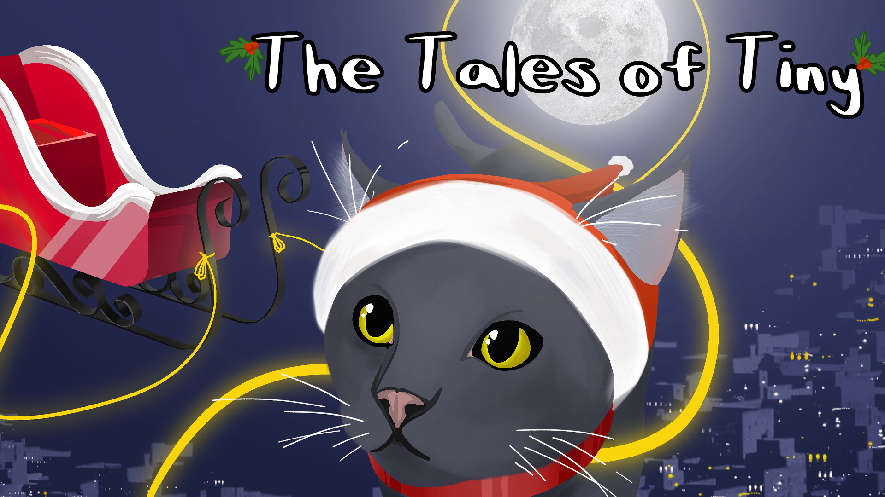

Game Development
During College last year, I decided to join the Game Development club. In the club we had a couple of workshops where we learned about different types of games as well as how to make them in unity. This game, Tales of Tiny, was the last workshop that we did which was about puzzle games.
So, my group decided to make a Christmas themed puzzle game since it was December. First let me tell you about the game a little bit and then I will talk about the prcoess that we used to develop the game.
The game is about a person with a multi-tool that has four main uses: blacklight, wrench, fishing rod, and a flute. Using the tool, you have to solve the puzzle in each room by finding the wishlist for that person's room. There are four rooms in total and each room focuses on two main uses of the flute. For the first room, which is the player's bedroom, you have to use the blacklight and the flute to get your cat, Tiny, out of the way. Then you enter the main house where you are able to continue your quest to find all of the wish lists.
For this project, my main role was the level designer. So for the beginning of the project, I ended up leading the discussion about what type of game everyone wanted to make. At first, we were all giving a large range of ideas, but I had to take all of those ideas and put them together to make a game that we could feasibly finish within the 6 week time frame that we had been given. After I collected everyone's ideas and came up with a solid idea of what we wanted to do, I got to work with creating the blacklight, which presented a couple of challenges because of the way that unity handles light. The main issue was that light in unity is that it does actually tell other objects that it is interacting with it, so I had to put together a solution using HLSL to get the effect that I wanted. Then I had to design all of the rooms including a hedge maze and a tiled train puzzle where the player has to rotate tracks and get the right solution. Finally, after putting everything together, you can find the game that my team produced at this link: Tales of Tiny.
Overall, I had a lot of fun learning to code using HLSL and creating fun but difficult puzzles.